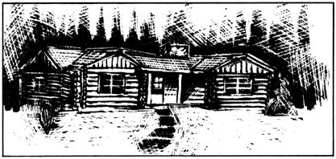

Report From Them That's Doin'
Since the publication of our first "Report From Them That's Doin' " in MOTHER NO. 22 (pages 56-57), my wife and I have received an avalanche of mail from folks wanting to know more about homesteading in northern Minnesota. I'd like now to answer some of the most commonly asked questions about this region, and perhaps-in this way-do right by the many kind souls whose letters we simply haven't had time to answer.
Number One on most people's list of concerns, it seems, is our climate . . . understandably so, since almost any place in the continental U.S. is warmer than northern Minnesota! (When we moved here-in the winter of '73-we asked an old-timer about the length of the summer season. His reply was: "Summer? That's the day we play baseball!")
Minnesota winters are frigid, make no mistake. From about mid-December to late February, the nighttime temperature usually dips below zero (Fahrenheit), and the mercury rarely goes above freezing during the day. (One time, about three years ago, we experienced a 16-day period when the temperature never got above zero degrees!) The snow, however, is always fresh and dry here during the winter . . . never the slushy mess that's so common further south and east. And because dry snow is so much safer to drive on, the roads in these parts are practically never salted (which is why you see so many well-preserved old cars and trucks around).
According to the Weather Bureau, this region gets an average of 21 inches or so of precipitation per year. (You can figure on an annual snowfall of 45 or 50 inches.) One thing the weatherman's charts and tables don't tell you, however, is that-usually-Ole Sol shines bright on sub-zero days. Personally, I can take a lot of cold as long as the sun is out.
Because we're so far north, our growing season (as one might expect) is rather brief-90 to 105 frost-free days per year-but it is long enough to allow a person to raise sweet corn, early tomatoes, and a slew of cold-loving crops. (We've even harvested our own vine pumpkins and Hubbard squash, which are supposed to take 120 days to mature!)
About ways of earning a living: The economy here is pretty much based on the extraction-by mining, logging, and farming-of natural resources from the land. (The region is also supported-to a lesser extent-by tourism.) Jobs in these fields aren't terribly abundant, but you can land one if you're persistent enough.
Probably the most common source of income up here is small-scale logging. Almost everybody engages in this activity sometime . . . including us. Carol (my wife) and 1 made about $2,000 as freelance loggers our first year on the farm, working a total of maybe 50 days. The only equipment we had was a chain saw and-beyond that-a horse to skid the cut timber to a landing, where a hired trucker picked it up. (We spent about five or six hours a day in the woods, which left plenty of time to do chores around our place.)
Nowadays, I work with three other back-to-the-land types in a seasonal construction business that has us rolling out to the Dakotas from late spring through early fall to work three or four days per week. (We not only earn considerably more money doing this than we would if we stayed around Bemidji, the nearest "large" city, but-since we subcontract our work-we're our own bosses, which happens to be worth a lot to us.)
Carol and I have received a number of inquiries about the real estate situation here in northern Minnesota. All we can say-first of all-is that land prices have soared in recent years (sound familiar?), although our acreage is still fairly reasonable-$100 or more an acre for open land, sometimes less for timbered-when compared to other parts of the country.
The main hassle, however, is seldom the price of a piece of property. Rather, the big problem-more often than not-is finding a small farm or usable tract of land that's for sale in the first place! Good-sized, habitable farmsteads like ours are exactly what hundreds of people are looking for right now. And usually, when someone (like me) gets hold of such a place, he isn't interested in selling for love or money (or both).
If you're serious about finding a piece of land here, about all I can suggest is that you get in touch with one of the big farm real estate sales firms, such as United Farm, Safe-Buy, or Strout. Each of these companies is well-represented in Bagley, Bemidji, Cass Lake, and Fosston, and will be interested-I'm sure-in helping you locate what you're looking for. (For more information, write to the addresses given at the end of this article.-THE EDITORS.)
Many people have written to ask about the feasibility of "living off the land" here. Happily, such a way of life is feasible in these parts . . . however, you most certainly won't be able to make the transition to self-sufficiency without a fair amount of tools, skills, good judgment, and money.
As I see it, any would-be homesteader must concern himself with two things if he's to become "self-sufficient": [1] feeding (and sheltering) himself and his family at as little cost as possible, and [2] finding a way to earn a small amount of cash during the year . . . enough to take care of such things as land taxes and manufactured necessities. (Like it or not, you will need to buy an occasional tool, plumbing fixture, light bulb, or other mass-produced item from the plastic "outside world" now and then. To think otherwise is nothing but Utopian daydreaming . . . believe me!)
The key to eating inexpensively, of course, is to grow a large garden. (This is true no matter where you live.) OK, so you can't raise watermelons and peaches here . . . you can grow short-season varieties of the cold-loving crops, such as peas, potatoes, rutabagas, turnips, cabbage, carrots, beets, and chard (all of which do well in the 16- to 18-hour days of early summer). A large freezer-one of those "manufactured necessities" I spoke of a minute ago-comes in mighty handy for taking full advantage of the summer harvest . . . however, a well-planned canning and root cellar storage scheme would work just as well.
Around here, you should have no trouble supplementing your low-cost garden-grown foods with no-cost wild edibles. Fact is, I've never seen such a cornucopia of free-for-the-pickin' nuts and berries as we had in and around Pinewood (our town) last year! Blueberries, raspberries, chokeberries, Juneberries, high- and low-bush cranberries, wild plums, rose hips, and hazel nuts came on in fast succession throughout the summer, making domestic planting of these delicacies a waste of time. Add to this the bounty of Euell Gibbons-type foods (cattails, acorns, burdock, sumac, etc.) that grow hereabouts, and you've got a virtual Garden of Eden for foragers!
The high-protein end of your diet can be taken care of inexpensively through fishing and hunting (assuming you have no qualms about killing for food). Large game fish-such as walleyed and northern pike-are legal from mid-May to mid-February, while good-sized pan fish may be caught in most lakes year round. (An especially large catch may, of course, be smoked and/or frozen for later consumption.) Come November, deer season opens . . . and in case you didn't know, a single kill of venison will keep you in meat for the entire winter.
The nice thing about living this far north is that you can store meat (venison, for instance) simply by keeping it outdoors-in a clean, dark locker-throughout the cold season. (Just be sure to seal the makeshift freezer as securely as possible, to protect it from cats, dogs, badgers, and other vermin.)
Wild rice grows abundantly in this region and serves as a kind of double-purpose food for homesteaders, since a person can either eat the grain or sell it for profit. Depending on when the crop ripens, the rice season may begin any time in late August or September. Usually, the harvesting is done by two people in a canoe: One poles the craft through the shallow waters of the rice field, while the other-using a stick of prescribed dimensions (the entire activity is regulated by the state)-knocks the ripe kernels of rice into the bottom of the boat. Experienced ricers can collect as much as 100 pounds of the grain in a single day this way, which is considerably more than the average "take".
The price paid for wild rice varies. Nearby processors offer $1.50 to $2.00 per pound for the raw grain. (In contrast, the same product will fetch $3.50 to $4.00 per pound in the tourist snares of Bemidji.) Then too, I've heard that East Coast gourmets pay as much as $7.00 per pound for the delicacy. It's too bad the producers and consumers can't get together on this one!
As I said earlier, a homesteader needs to be able to earn some money during the year . . . and around here, we like to take advantage of two handy moneymaking projects that just naturally go together in the fall: [1] the cutting of boughs for the Christmas wreath company in Bemidji, and [2] the gathering of pine cones to sell to state and private nurserymen.
An experienced bough-cutter can gather a pickup load of trimmings (taken from the bottom branches of young trees) in a day . . . the equivalent of half a ton, if the truck has a rack. The boughs then bring $55 per ton in the case of balsam, or $65 per ton if the cuttings are cedar. (Cedar pays better because it grows in swamps that're hard to get into.)
Pine cones, on the other hand, are bought and sold by the bushel. The price paid for them depends on the species of origin: Jack pine commands around $4.00 per bushel, red and white pine bring $6.00, and various types of fir fetch up to $9.00. (It takes quite a while, though, to gather a bushel of fir cones, which are only one-fourth the size of the cones from red pine.)
If you're thinking seriously of moving to this area, you're probably interested in knowing something about the local people. Well, I think I can safely generalize and say that most northern Minnesotans are good, honest, hardworking folks . . . people who've managed to preserve (to a remarkable extent) the pioneer spirit-and the many all-but-forgotten homestead skills-that their ancestors brought to this region.
Norwegians comprise the largest "ethnic" group here. In general, they have a reputation for thriftiness that's amply reflected in their lifestyle. They're uneasy, for instance, about spending hard-earned dollars for fuel oil, convenience foods, and packaged entertainment (although some of them have weaknesses for taverns, polka bands, and snowmobiles).
A good many native residents are older folks who've seen their own children leave the area to seek the tinsel treasures of city life, and who-consequently-are usually happy to see young people reinhabit abandoned farms and houses ...even if the youngsters do drive funky vans, have long hair, and say "far out" a lot.
The multiplicity of social institutions that characterized American life of a century ago still exists, I'm glad to say, in northern Minnesota. Church and school events are much discussed and looked for ward to by the local populace. Homemakers', sportsmen's, and veterans' organizations thrive. In addition, the local citizens take an unusually active role in government, since they know their elected officials as neighbors.
Perhaps the two most charming social institutions in these parts are the cutting bee and the benefit dance. A cutting bee is an all-out, slam-bang day of logging in which neighbors work together to raise money for a family that happens to be down on its luck. Likewise, the benefit dance is just what the name implies: a dance designed to generate funds for the relief of people in need.
One of the most unforgettable experiences I've ever had was when I attended a benefit dance held in behalf of four or five local families who'd been burned out in a recent forest fire. The event took place at the Buzzle Town Hall, a weathered gray, false-fronted relic from the turn of the century. Inside, sunlight glared on the corn-flour-sprinkled wood floor, where poker-faced farmers and loggers pumped away to the polka music with their strongas-steel womenfolk. Along the sidelines, young barefoot girls did the twist together as the nasal twang of the band's lady drummer split the air in a strained imitation of Loretta Lynn. The vibes were incredibly funky . . . it was like taking a step back into Steinbeck's America of the thirties! I remember thinking, "I'm glad this is my home."
If I were to give just one word of advice to folks wanting to start a new life in the woods of northern Minnesota, it'd be this: Don't come here and expect the woods and lakes and wildlife to solve your personal problems by mere association. (The trouble with our militaristic/nihilistic/uptight modern society right now-in my opinion-is that it's brimful of messed-up individuals . . . individuals who-unless they take time to sort out their own private hang-ups-are not going to find happiness in ANY neck of the woods!) On the other hand, if you harbor no illusions about country life . . . and you think you can handle the harsh climate, the scarcity of full-time employment, and all the rest . . . I say come on out. We'd love to have you.
The following companies have offices all over the country and publish catalogues several times a year listing farms for sale.
Strout Realty
P.O. Box 2757
Springfield, Mo. 65803
United Farm Agency
612 W. 47th St.
Kansas City, Mo. 64112
Safe-Buy Real Estate Agency
2405 Gaines St.
Little Rock, Ark. 72203 40
|
 |
|
|